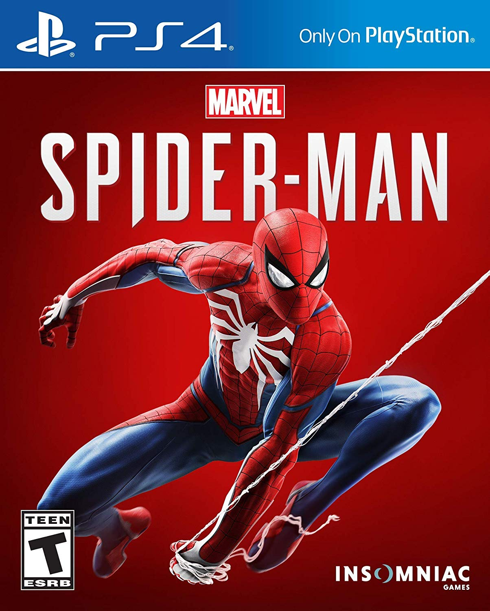
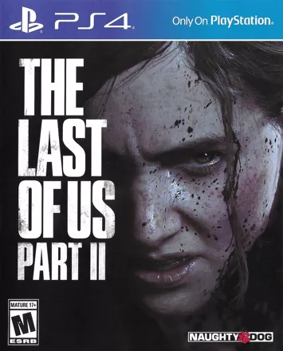
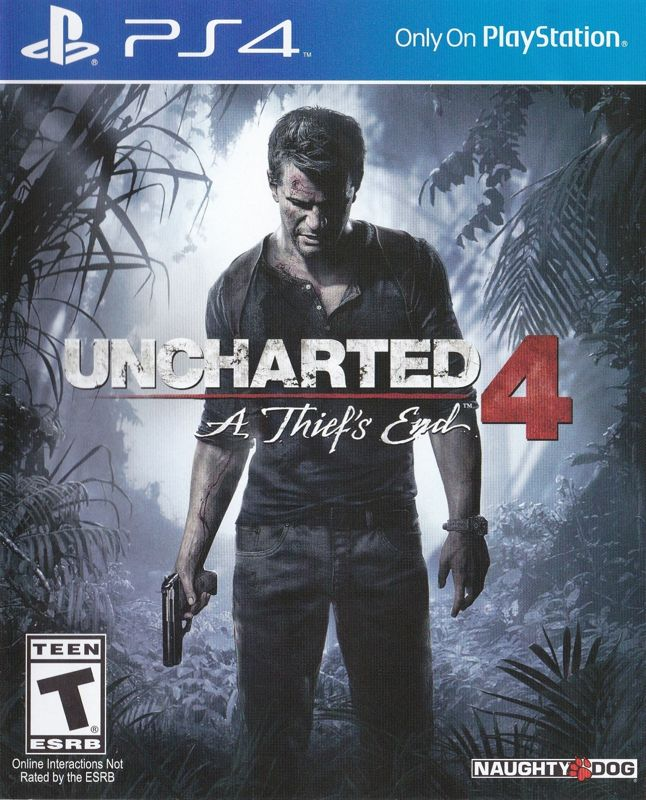
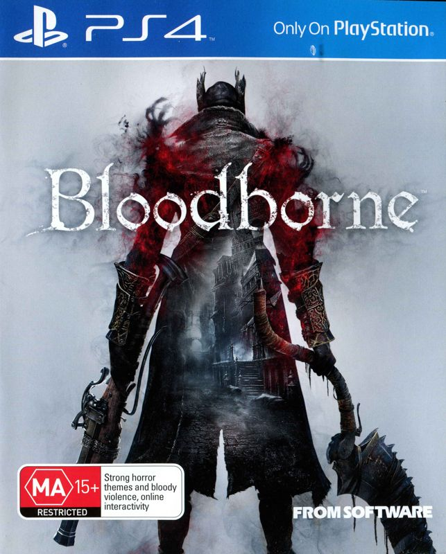
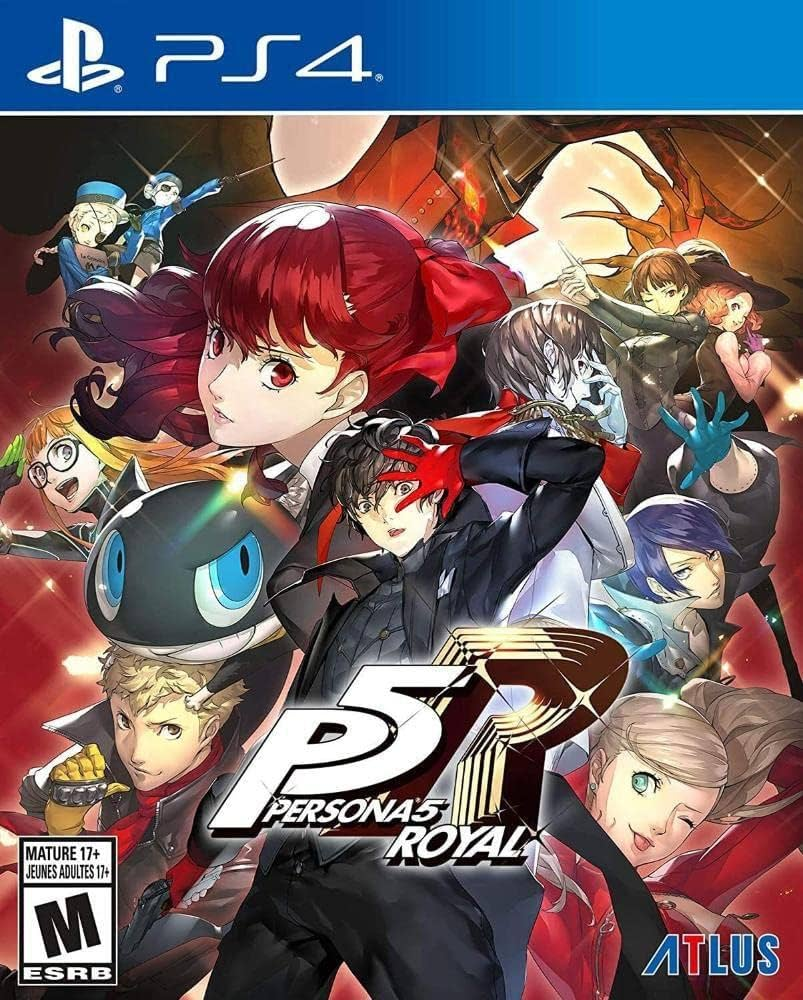
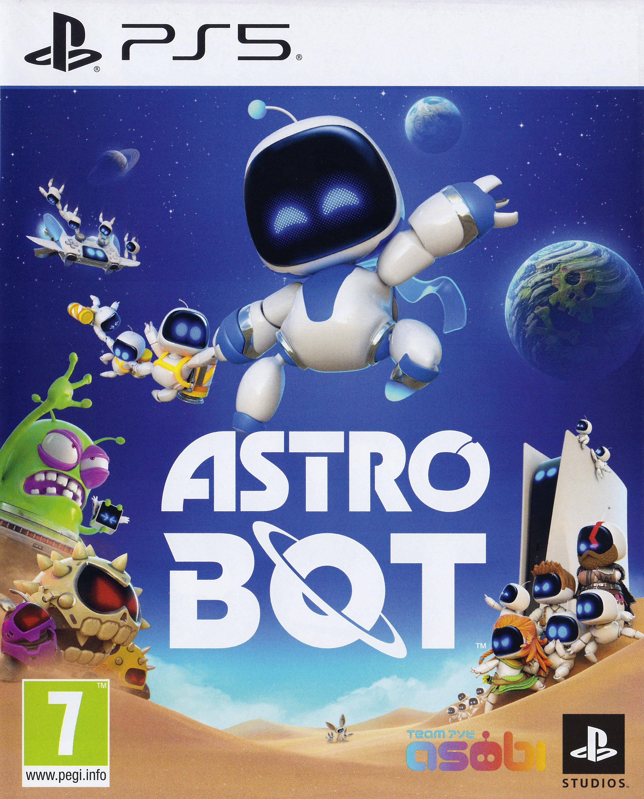
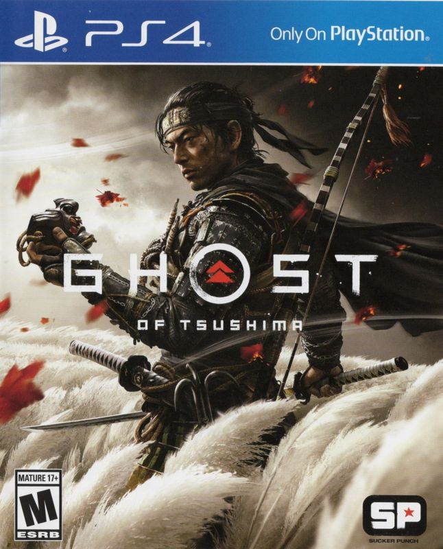
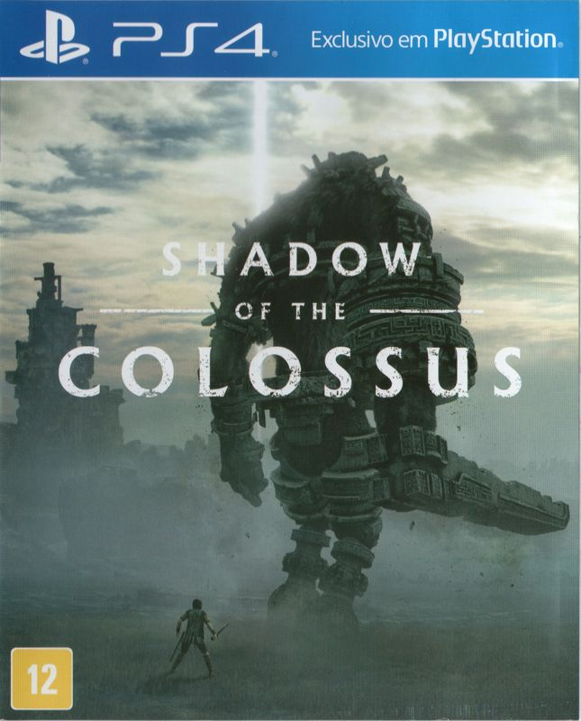

Essa lista contém os jogos exclusivos mais famosos do PlayStation.
Os exclusivos de PlayStation são conhecidos por suas histórias incríveis, gráficos impressionantes e aventuras inesquecíveis! Jogos como God of War, The Last of Us II, Marvel’s Spider-Man, Uncharted 4: A Thief's End e Bloodborne conquistaram milhões de fãs com combates épicos, personagens marcantes e mundos cheios de detalhes. Cada título oferece uma experiência única, mostrando por que esses jogos se tornaram verdadeiros ícones dos videogames!
-
Marvel's Spider-Man (2018)

Aventure-se pelas ruas de Nova York com Peter Parker! Enfrente grandes vilões, balance entre os arranha-céus e proteja a cidade em uma aventura cheia de ação e emoção.
-
God of War (2018)

Desbrave os domínios nórdicos com Kratos e Atreus em uma jornada épica que explora a mitologia nórdica de forma única e emocionante.
-
The Last of Us Part II (2020)

A continuação da jornada de Joel e Ellie em um mundo pós-apocalíptico, onde a sobrevivência é apenas o começo de uma história mais sombria.
-
Uncharted 4: A Thief's End (2016)

Junte-se a Nathan Drake em uma aventura repleta de tesouros, mistérios e perigos. Explore lugares incríveis, enfrente inimigos e descubra os segredos de um lendário pirata.
-
Bloodborne (2015)

Explore a misteriosa cidade de Yharnam em um mundo sombrio e assustador. Enfrente monstros aterrorizantes e desafios difíceis em uma aventura que exige habilidade, estratégia e coragem.
-
Persona 5 Royal (2020)

A trama acompanha os Phantom Thieves, um grupo de adolescentes que entra na mente dos adultos para confrontar seus pensamentos corrompidos antes que possam causar mal aos demais ao seu redor.
Jogos que representam as franquias mais importantes da playstation
Alguns jogos representam a essência da PlayStation e mostram toda a criatividade de suas franquias! Astro Bot, Ghost of Tsushima e Shadow of the Colossus são grandes exemplos, cada um com aventuras únicas, mundos impressionantes e experiências inesquecíveis.
-
Astro Bot (2024)

Embarque em uma aventura espacial divertida ao lado de Astro! Explore mundos coloridos, enfrente desafios criativos e descubra surpresas em cada fase dessa incrível jornada.
-
Ghost of Tsushima (2020)

Assuma o papel de Jin Sakai, um samurai que luta para proteger sua terra durante a invasão mongol do Japão. Explore paisagens deslumbrantes e viva uma jornada repleta de combates e honra.
-
Shadow of the Colossus (2018 – Remake)

Enfrente gigantescos colossos em uma jornada misteriosa por terras esquecidas. Com cenários impressionantes e uma história emocionante, o jogo proporciona uma experiência única e inesquecível.